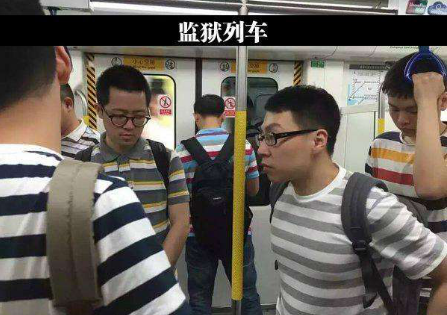
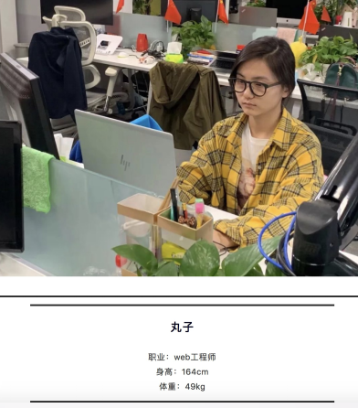

程序员这个职业向来是以加班多,工作强度大,并且基本工资高著称的。但是他(她)们更让人印象深刻的是他们的穿作。关于程序员的形象,笔者最近几年都很关注,从早期的天涯论坛,到知乎,到头条悟空问答等各大平台中关于程序员着装的描述来看,得出的结论是————程序员几乎是“不会”穿衣的。
在中国,程序员职业已经有了二十多年历史。时代的进步,带来了技术的进步,程序员的综合素质也在进步。程序员们对自身着装的要求也在不断进步,毕竟我们已经进入了“颜值时代”。对于90后的程序员(我厚颜无耻的将自己强行加入此列),我对他们的称呼是“新生代程序员"。
新生代程序员必然有新的主张————新技术,新生活,新形象。而今天的主题将聚焦于新形象。
"宅男"?、"单生狗"?、"生活邋遢"?
"无趣"?"油腻"?"程序员是唯一一个不穿制服就能猜得出身份的职业。"
“科技精英”？“工程师”？“有型”？
大家是否还记得毕业后第一次面试经历?我相信很多童鞋,第一次参加面试一定是在行头上花了心思的。穿正装，皮鞋,把简历装在文件袋,这似乎是大家的共识。
但是工作几年之后,我们再次参加面试,可能变成了这样的：
不知道从什么时候开始,码农们的着装风格变得出奇的一致。

有时候会我觉得自己的穿衣风格在程序员中间显得格格不入。不穿条纹和格子衫是不是写不好代码(难道我做了七八年的伪程序员?)
程序员中年危机的话题每隔一段时间伴随大厂的裁员上一次热搜,近两年尤甚。
程序员是否中年危机,各有各的说法,终无定论。但是程序员中年油腻和未富先老的形象却是妇孺皆知。在"颜值即正义”的时代,程序员们经常成为圈内圈外吐槽,连相亲都收鄙视。
程序员的工作虽然辛苦,但是基本工资应该是中等偏上的。这是互联网发达带来的红利。一份相对体面的工作,应该有一个相适应的穿搭。
如果我们用收入的10%来提升自己的形象,获取你的职业发展之路会越走越宽。
十二色环是由近代色彩学大师约翰斯、伊登（Johannes Itten，1888~1967）发明,由色彩三原色(红、黄、蓝)混合发展出十二个色相,六组补色在直径两端成对,一目了然，是初学者选择配色时最方便的参考工具。
理论大家都懂,笔者只是抛砖引玉。下面一起看看这些真正的程序员是如何实现形象逆袭的。

看了上面的改造你是否也有心动呢?
很多程序员在入行之前对自己的外在形象是有要求的,对自己的穿搭是讲品味的。但是工程师的舞台太小了,限制了自身的兴趣,限制了自己的更多可能性,甚至于对美的追求。我们在追求技术极致的同时,自己的生活却过的不够精致。而表现出来的形象更是让人大跌眼镜。
在默默搬砖的数年中,或许你变得越来越路人,越来越被人无视。但是你从现在开始改变自己的形象,或许明天你的同事们和你的家人会觉的眼前一亮。
不断迭代的不止于技术和工作,还有你的形象。